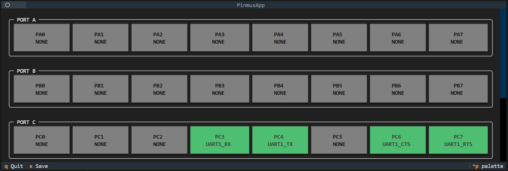
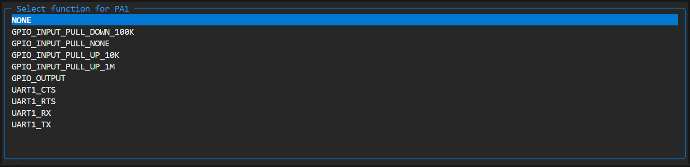
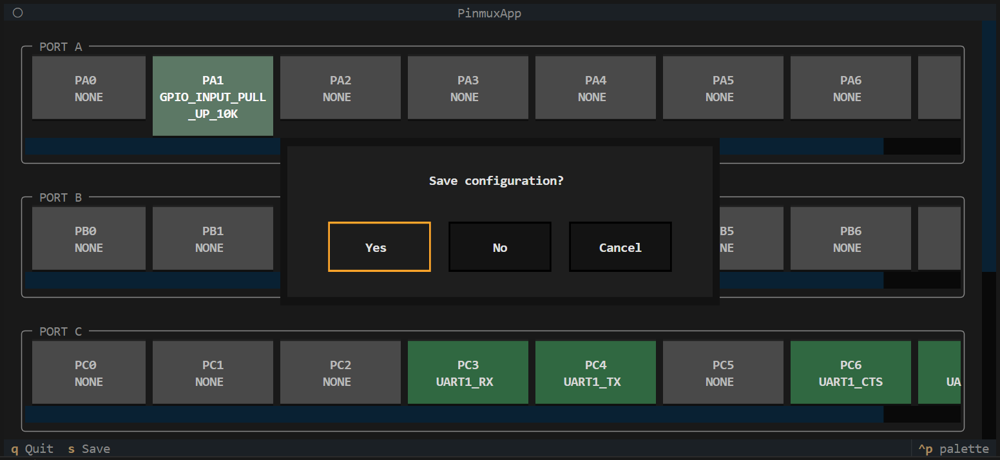

Pinmux 引脚配置工具#
概述#
Pinmux（引脚复用）工具是 UniSDK 提供的图形化引脚配置工具，帮助开发者在终端中可视化配置芯片引脚复用功能。
主要特性：
图形化终端界面（基于 Textual 框架）
通过交互式弹出菜单可视化选择引脚功能
引脚配置冲突检测
需求验证（确保所有必需功能已分配）
支持多种芯片封装变体
与 Kconfig 配置系统集成
自动生成
pinmux.h头文件
启动方式#
# Method 1: Via CMake target
make pinmux
# Method 2: Direct Python module invocation
python -m scripts.pinmux
# Method 3: Skip GUI, generate default configuration
python -m scripts.pinmux --skip-gui
主视图#
打开后，您将看到主仪表板：
端口： 所有 GPIO 口的可滚动垂直列表（例如 PORT A、PORT B）
引脚： 在每个端口部分内，各个引脚显示为交互式按钮，显示引脚名称及其当前分配的功能

图 1. Pinmux 界面概览，显示 GPIO 端口、引脚和已分配的功能。选择功能#
点击引脚（或导航到该引脚并按 Enter）
将弹出一个标题为 Function Select 的窗口
列表显示该特定引脚支持的所有硬件功能
选择所需功能（例如
UART0_RX）或选择 NONE 禁用引脚按 Enter 确认

图 2. GPIO 引脚的功能选择界面。快捷键#
按键 |
操作 |
|---|---|
s（保存） |
验证配置 — 检查冲突和缺失功能。如果有效，保存并退出。如果无效，显示错误通知 |
q（退出） |
退出应用程序。如果有未保存的修改，将显示确认对话框 |
验证错误发生在以下情况：
必需功能未分配给引脚（例如 UART0 已启用但 UART0_TX 未分配）
存在引脚冲突（例如 UART0_TX 同时分配给 PC3 和 PC4）

图 3. 退出界面。保存#
配置将保存到名为 <SoC or board name>.<soc or board>.pinmux 的文件中。例如，为 TL3218X_EVK 构建将生成 TL3218X_EVK.board.pinmux。
此 .pinmux 文件包含人类可读格式的引脚到功能映射，并在再次调用工具时用于恢复先前的引脚设置。
此外，根据保存的设置，在构建文件夹中生成 pinmux.h，其中包含固件代码可用的 C 预处理器定义。
.pinmux 文件会持续存在直到项目切换，允许在切换芯片时恢复先前的引脚设置。
文件格式#
.pinmux 文件使用简单的键值格式：
PC4=UART0_TX
PB2=UART0_RX
PA0=GPIO_OUTPUT
每行代表一个引脚分配
所有字母均为大写
格式：
<引脚名称>=<功能名称>引脚名称由字母 P、端口字母和引脚编号组成
解析过程中，以下行将被忽略：
不符合格式的无效数据
引用不存在的引脚或功能的有效数据
分配给当前配置中禁用的端口上的引脚
分配给当前配置中未启用的功能
覆盖机制#
每次调用 pinmux 时，数据按以下顺序加载（每个覆盖前一个）：
SoC 默认值 — 来自
soc/<soc>/pinmux/function.yaml（用于开发）项目
.pinmux— 在项目目录中（为任意芯片设置自定义默认值）<identifier>.pinmux— 在项目目录中（芯片特定覆盖）<identifier>.pinmux— 在构建目录中（上次实际用户引脚设置）
这使得项目可以拥有开箱即用的引脚设置，同时仍允许自定义。
内部执行流程#
数据加载与同步#
当应用程序启动时，它会合并多个数据源：
soc/<soc>/pinmux/function.yaml— "功能定义"：描述芯片的所有可用功能soc/<soc>/pinmux/pinmux.yaml— "字典"：列出每个物理引脚及其支持的功能。每个端口可以有一个exclude属性，描述其引脚不支持哪些功能。单个引脚也可以使用exclude和include属性。限制按以下顺序应用：端口的 exclude → 引脚的 exclude → 引脚的 include。为简化起见，all关键字表示所有功能。对于功能组，可以使用组名称（例如uart0代表uart0_tx、uart0_rx、uart0_cts和uart0_rts；uart涵盖uart0、uart1等）。如果某个引脚仅支持一个确切功能，请使用exclude: all配合include: your_function。soc/<soc>/pinmux/pinmux_<case>.yaml— "限制"：通过分配delete关键字覆盖pinmux.yaml，以移除特定芯片封装的引脚或端口.config— "需求"：告知应用程序哪些驱动已启用（例如 "UART0 已启用，因此我们需要 TX 和 RX 的引脚"）.pinmux文件 — 之前的用户配置（参见覆盖机制）
加载顺序：
.config文件，包含当前配置并标识当前芯片。来自
function.yaml的功能描述，跳过配置中禁用的功能。来自选定芯片的
pinmux.yaml和pinmux_<case>.yaml的端口和引脚描述。按照覆盖机制部分描述的顺序加载
.pinmux文件。
更改引脚功能#
当一个引脚选择新功能时，将立即发生以下操作：
冲突检查： 系统扫描所有其他引脚。如果您尝试将唯一功能（如
UART0_TX）分配给 PC0，但 PB2 已拥有该功能，系统会标记 冲突。观察者更新： 应用程序使用"观察者模式"。
引脚数据发生更改。
UI 小部件收到通知并重新绘制自身（更新文本和颜色）。
下一次在
PinmuxManager中访问is_modified属性将返回True，直到触发保存操作。
保存过程#
当您按下保存（s）时，应用程序在写入磁盘前执行严格验证。
第 1 步：验证
检查冲突： 是否有两个引脚分配到同一个不可重复的功能？如果是 → 报错。
检查需求： 配置所需的所有功能是否已分配给有效的引脚？如果否 → 报错。
第 2 步：写入
如果没有错误，引脚映射将使用简单的键值格式保存到
<identifier>.pinmux文件中。
生成 pinmux.h#
保存后，pinmux.h 将自动生成 C 预处理器定义：
#define PINMUX_UART0_TX_PORT TLK_GPIO_PORT_C
#define PINMUX_UART0_TX_PIN TLK_GPIO_PIN_4
#define PINMUX_UART0_RX_PORT TLK_GPIO_PORT_B
#define PINMUX_UART0_RX_PIN TLK_GPIO_PIN_2
#define PINMUX_GPIO_OUTPUT_0_PORT TLK_GPIO_PORT_A
#define PINMUX_GPIO_OUTPUT_0_PIN TLK_GPIO_PIN_0
#define PINMUX_GPIO_OUTPUT_COUNT 1
配置文件位置#
Pinmux 配置文件
soc/<chip>/pinmux/
├── function.yaml # Pin function definitions
├── pinmux.yaml # Pin multiplexing configuration
├── pinmux_qfn48.yaml # QFN48 package
├── pinmux_qfn88.yaml # QFN88 package
└── ...
构建集成#
Pinmux 配置深度集成到构建系统中：
generate_pinmuxCMake 目标在编译前自动执行预构建检查自动检测
pinmux.h是否需要更新生成的
pinmux.h放置在build/目录中，并自动添加到包含路径
CI#
CI 在所有示例中使用单一配置。这是可行的，因为未使用的分配会被跳过，因此您只需考虑此文件中所有示例的引脚使用情况。在构建之前，CI 将此文件复制到构建目录。由于构建设置会在覆盖过程中最后应用，因此最终配置与文件中描述的配置一致 — 所有先前的设置均被覆盖。